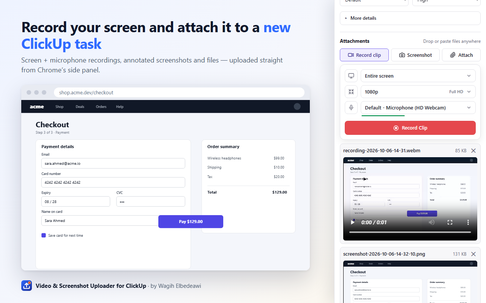

Video & Screenshot Uploader for ClickUp
A free Chrome extension by Wagih Elbedeawi
Record your screen or capture and annotate screenshots, then attach them to a new or existing ClickUp task — straight from Chrome’s side panel.

- Record a clip of your screen, a window or a tab — pick the resolution and microphone. Keeps recording with the panel closed.
- Screenshots of the visible tab, a selected area or the whole screen, with draw, text, blur and crop.
- Create a task (with assignees, due date, tags and custom fields) or add to an existing one, with an optional comment.
- Uses your own ClickUp API token, stored only in your browser. No servers, no analytics, no tracking.